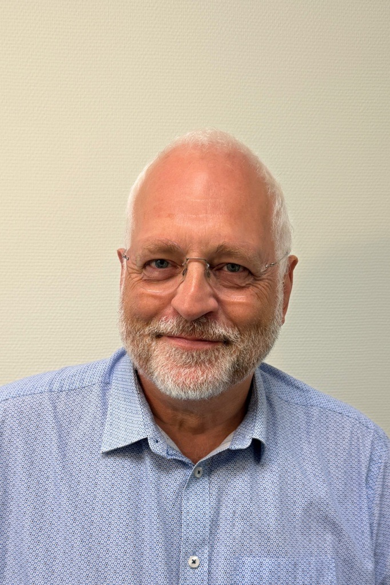

Thank you for scanning my QR code.
Behind every CV is a person. I hope this page gives you a better understanding of who I am, how I work, and what I can contribute to your team.
More than twenty years of procurement experience have taught me that results are created through people, cooperation and practical solutions.
I like to create structure where there is chaos, bring people together, and make procurement work better in daily operations. I look beyond price alone and focus on total cost, lead time, risk, quality and delivery.
Phone: +47 904 12 221
Call DirkEmail: bakkerspost@gmail.com
Email: bakkerspost@gmail.com
LinkedIn: linkedin.com/in/dirkbakker-norway
Full profile is available through the button at the top of this page.
"You do not need someone who delivers parts. You need someone who delivers coherence, resilience and a team that stays until the end. That is me."